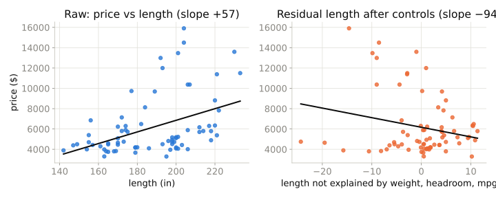
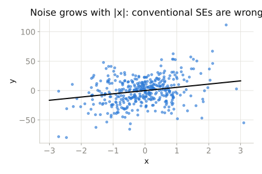

Session 1 · Mixtape chapters 1–2
Every observed (price, quantity) pair was produced by both kinds of shock. The regression of quantity on price mixes the blue arrow with everything else.
\[\beta_1 = \frac{\mathrm{Cov}(y, \tilde{x}_1)}{\mathrm{Var}(\tilde{x}_1)}, \quad \tilde{x}_1 = x_1 - \hat{E}[x_1 \mid x_2, \dots, x_k]\]

Same 74 cars. Left: longer cars cost more. Right: once weight, headroom and mpg are taken out of length, the leftover length is associated with a lower price — and that slope is exactly the multiple-regression coefficient.
| Situation | Use |
|---|---|
| Errors have constant variance | Conventional |
| Variance depends on \(X\) | Heteroskedasticity-robust (HC1) |
| Units share shocks (classrooms, states) | Cluster-robust |

auto: price on length, then add controls — watch the sign fliplength coefficient via regression anatomyRegression tells you what the conditional expectation looks like. Whether that is a causal effect depends entirely on an argument about the error term — and that argument is the rest of this book.
Mixtape Workshops · built on Cunningham, Causal Inference: The Mixtape